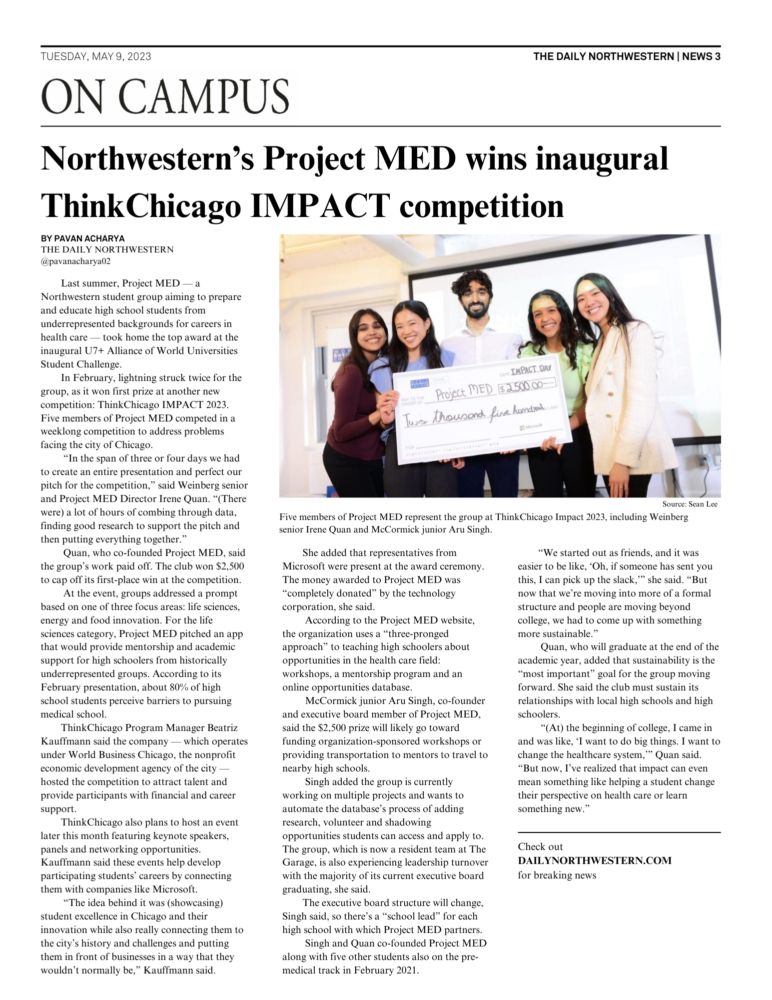
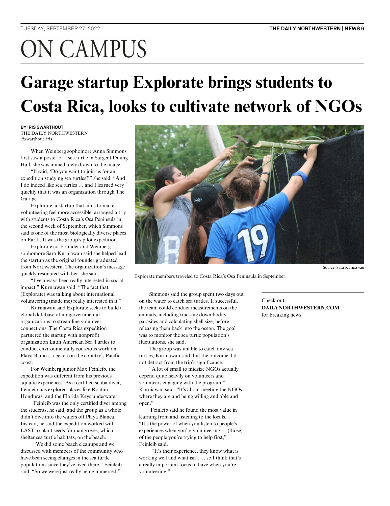
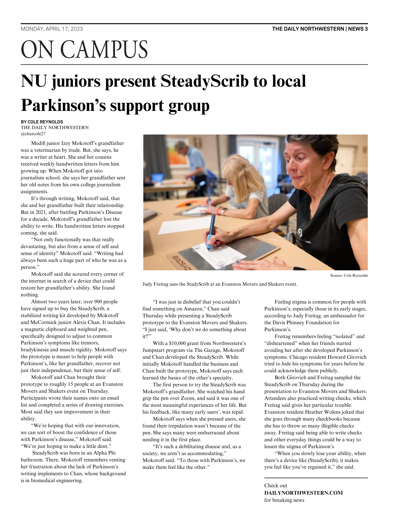
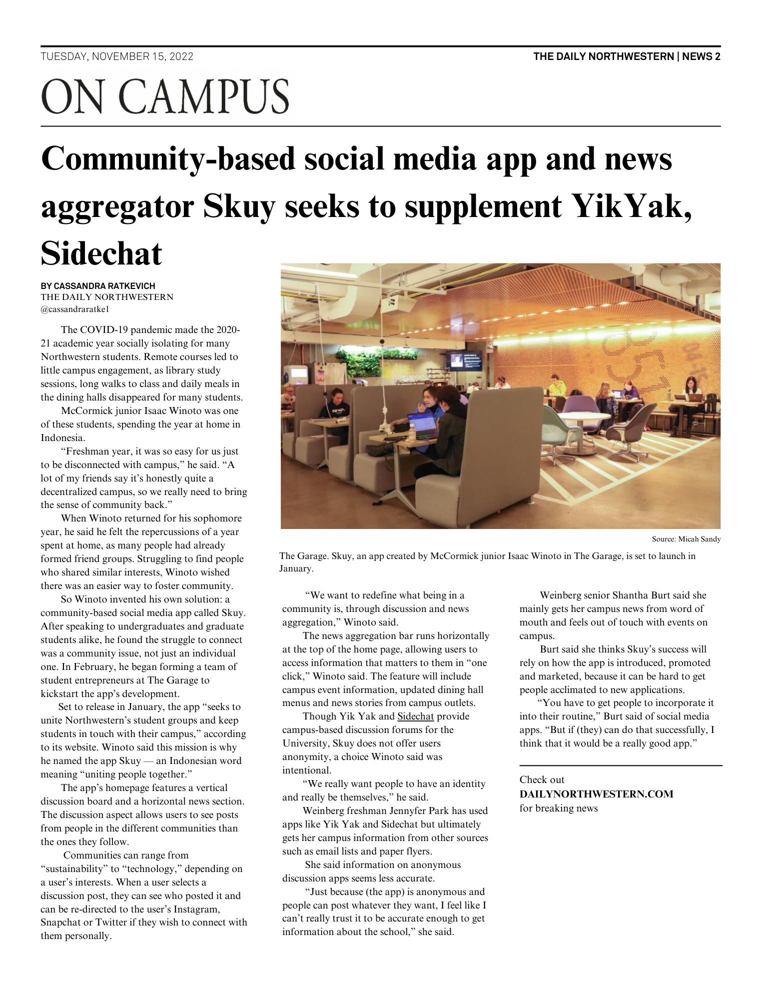
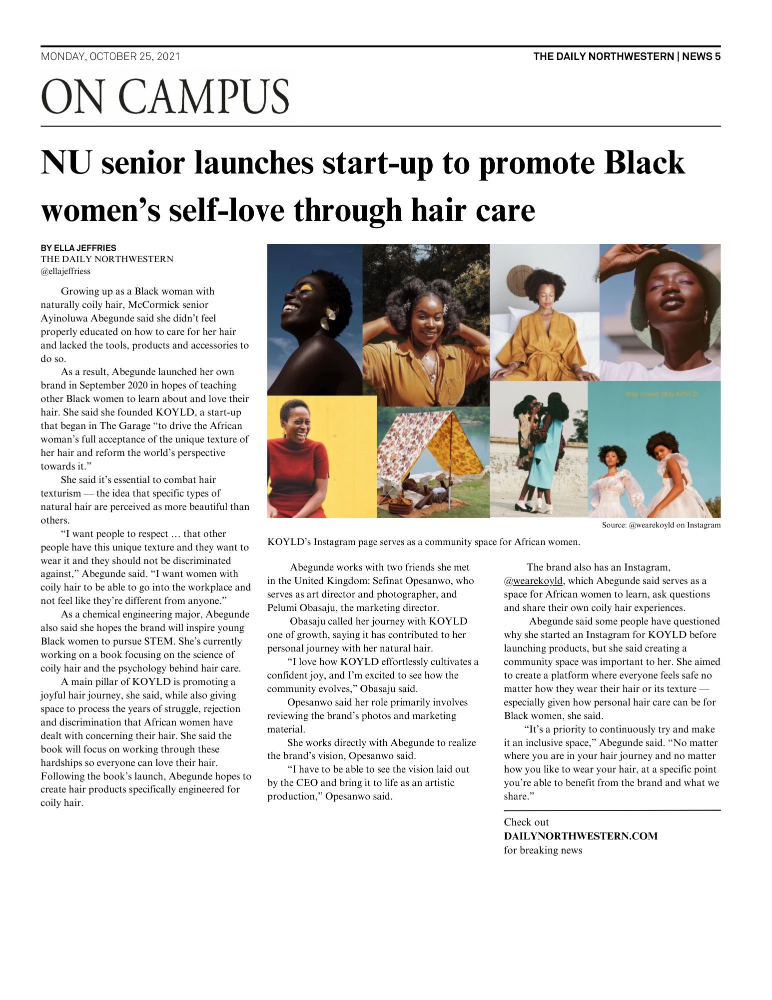
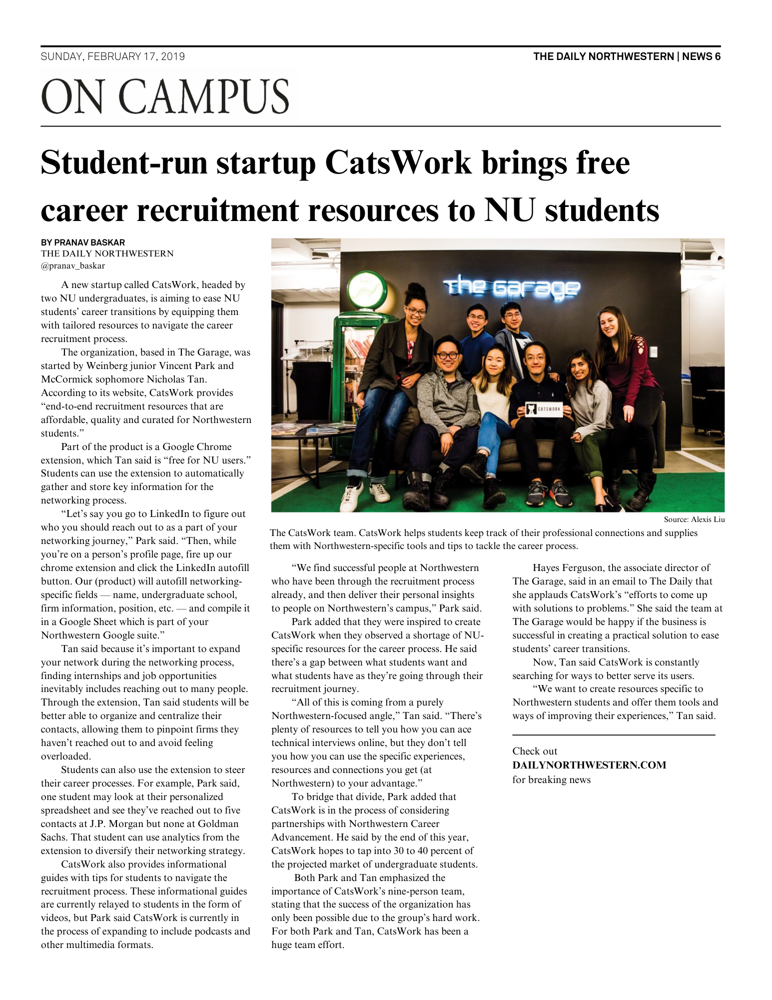

Giving student founders
a voice.
As a Marketing Aide at The Garage — Northwestern's premier startup incubator — I help bring programming and resident ventures to life through digital content, event storytelling, and 1:1 founder support. The Garage supports 38+ resident ventures at any given time, and my job is to make their stories worth following.
"How can storytelling empower early-stage founders and foster a thriving entrepreneurial community on campus?"
I write and format feature stories on student ventures, manage event photography and coverage, and provide 1:1 branding and marketing guidance to teams in the Residency Program. I also help plan and cover weekly Founder's Friday gatherings — capturing them with professional photography and distributing content across platforms.
What I do
at The Garage.
I write and edit feature articles spotlighting resident ventures — conducting founder interviews, researching their markets, and crafting narratives that make their work accessible and exciting to a campus audience. Every article is published on The Garage's website and distributed across their social channels.
Published work: Search "Beatriz Aguiar Fonseca" on thegarage.northwestern.edu to see my full body of published writing.
I plan and photograph weekly Founder's Friday events — capturing keynote speakers, panel conversations, and the candid community energy that makes The Garage worth being part of. Photos are used across Instagram, LinkedIn, email newsletters, and event recaps.







Founder's Friday events, panels, and The Garage community in action
I provide 1:1 marketing and branding consultations to student ventures in the Residency Program — helping early-stage founders articulate their value proposition, develop their visual identity, and build marketing strategies that work with limited resources and time.